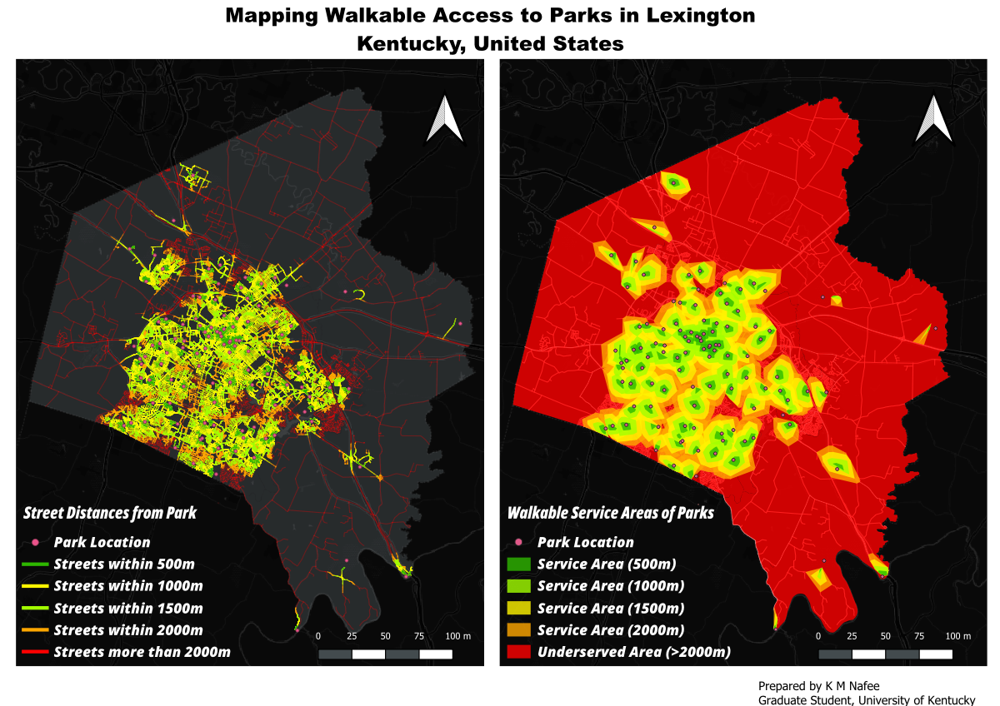

The final project assesses the walking accessibility of parks in Lexington using walkable service areas based on the closest street network distances. By creating isochrones at 500m, 1000m, 1500m, and 2000m intervals, the project delineates the extent of walkable service areas of the parks to the residents of Lexington
The final project assesses the walking accessibility of parks in Lexington using walkable service areas based on the closest street network distances. By creating isochrones at 500m, 1000m, 1500m, and 2000m intervals, the project delineates the extent of walkable service areas of the parks to the residents of Lexington
Click below for a full-screen map.